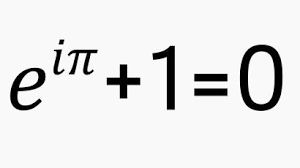

MINDISM
MINDISM HAS A MATHEMATICAL FOUNDATION
MINDISM DETAILS AND EXPLAINS THE NATURE OF THE FABRIC OF THE UNIVERSE AND HOW IT IS WOVEN. IT DESCRIBES THE IMMATERIAL BUILDING BLOCKS THAT CONSTITUTE THE FUNDAMENTAL, STRUCTURAL FORM OF THAT WHICH UNDERLIES WHAT WE REGARD AS EXISTENCE, REALITY AND THE UNIVERSE ITSELF.
MINDISM PRESENTS AN EXPLAINATION AS TO HOW DNA ORIGINATED ON THIS PLANET AND HOW DNA ENABLES A TWO WAY INFORMATION FLOW BETWEEN MIND AND CELL BODY. THIS PROCESS, DEFINES LIFE ON THIS PLANET.
A SIMILAR PROCESS WILL ENABLE LIFE TO MANIFEST ON OTHER PLANETS IN THE UNIVERSE IN ACCORD WITH THE LAWS OF PHYSICS THAT WILL APPLY TO THAT PLANET.
The first quote below, Max Plank refers to Mind as the matrix of all matter. Mindism states that Mind exists and experiences three distinct realms, that together, manifest everything that exists. Conscious Mind experiences the 'external' realm of matter, (physical, dimensional). Intelligent Mind exists in the 'internal' mental realm, (pure waveform frequencies), the realm of matter is separated from the mental realm by the zero point field. Mindism refers to the zero point field as the zero point realm and regards it to be synonymous with 'the aether'.
“All matter originates and exists only by virtue of a force; we must assume behind this force is the existence of a conscious and intelligent Mind. This Mind is the Matrix of all matter” ……. Max Plank 1856-1947 the Father of Quantum Physics
“Anyone who becomes seriously involved in the pursuit of Science becomes convinced that there is a Spirit manifest in the Laws of the Universe, a Spirit vastly superior to that of man” ……. Albert Einstein
Mindism asserts that this Spirit exists within the zero point realm
“The day Science starts to study nonphysical [metaphysical] phenomena, it will make more progress in one decade than in all of the previous centuries of its existence” ………. Nikola Tesla
Mindism is an attempt to marry metaphysical phenomena with the physical realm that our senses perceive.
“If science knew what light actually is, instead of the waves and corpuscles of incandescent suns, a new civilisation would arise from that one fact alone” ……… Russel Wallace
Mindism is a work in progress, I can comprehend a lot of Wallace's work, I understand far less, however, I consider that had he known about the zero point field he would have been able to explain a lot of his theories more eloquently, enabling more simple minds, just like my own, to have a greater understanding of his work.
“DON'T BELIEVE ANYTHING I TELL YOU, DON'T BELIEVE ANYTHING ANYONE TELLS YOU, NOT EVEN ME, LOOK INSIDE AND YOU WILL FIND TRUTH” ...Siddhartha Gautama, The Buddha, (allegedly)
Like the 'Tao Te Ching' by Lao Tzu, this work uses words to attempt to explain and describe that which is beyond words, i.e. the mental, non-dimensional realm of Soul and Mind and the aetheric, zero point realm of 'Spirit.'
INTRODUCTION
Mindism is based on the synthesis of Plato and other Greek philosophers, (Mind and Matter as separate entities) with works of Godfried Leibnitz, Euler, Sir Roger Penrose and other mathematicians, correlating with evolutionary biology more akin to Lamarq than Darwin. The genius of Viktor Scauberger was undoubtably the key for me, that opened my mind to these universal truths. Mindism explains metaphysical concepts such as Kabala and other aspects of religion and spirituality. Mindism explains the mechanism whereby DNA enables Life to manifest on planet Earth.
Mindism defines Mind, Spirit, Soul, Awareness and Consciousness so that we can all be "on the same page". Its definitions and statements are correct and the truth extends throughout the universe, not just this planet.
This article will explain existence in an easy to follow, step by step process designed to keep the mind open and feed it with Absolute Truths to further develop the reader's understanding of the world we live in. It should help separate the lies and spinning of truths that cloud our perception and interpretation of the events and experiences that reality confronts us with.
The individual is a combination of a mind and a body operating in unison. We have been told many conflicting details with regard to ourselves, what we are and where we came from. How can the individual start to separate truth from lies?.... I give a very precise explanation of how life first appeared and evolved on this planet in my work, The Evolution of Mind. Mindism explains, Near Death Experiences and why many people who receive organ transplants develop characteristics of their donor, and much more, including gene mRNA therapy.
MIND EXPERIENCES THREE DISTINCT REALMS OF EXISTENCE. THESE REALMS COEXIST AND MANIFEST AS THE UNIVERSE.
We are all familiar with the Material Realm of Dimensional SpaceTime that appears to us as the physical matter of a relatively solid world. Our senses enable us to navigate this physical environment and survive to the best of our ability.
Most people are less familiar with the consideration that our physical body has a corresponding Spirit body. The Spirit realm separates the physical realm from the Mental Realm of non-dimensional pure waveform frequencies. The Spirit realm corelates with a lot of quantum physics, as well as matters religious and spiritual.
The physical realm and the spirit realm manifest with the Big Bang. The realm separating mind from matter used to be called the Aether, I also use the term Zero Point Realm to describe it because it exists below/inside the physical realm but outside of the mental realm. The zero point realm is Mindism's take of and directly corresponds to the zero point field.
The Non-Dimensional Realm of Mental Pure Waveform Frequencies is the only true realm of existence in that it has and will always exist. (G. Leibnitz). The physical realm and the spirit realm manifest with the Big Bang, and, with the 'big Crunch', return to the non-dimensional realm whence they originated.
1) The Physical Realm is the 'location' of Conscious Mind. Within spacetime, conscious mind experiences the 'here and now', the moment, and, using conscious thought, it makes decisions 'in real time', accordingly.
The physical realm is one of relativity, everything is relative to something else and can also be measured. It has a relative vocabulary that supports it, e.g. bigger, smaller, thick, thin, it is a world of opposite terms whose meaning is inherently relative. Conscious Mind does not exist as a physical entity, it is a mental construct that is connected to the outer levels of the mammalian brain. The physical realm is where we experience Energy,
1) The Spirit Realm, aka the zero point realm, the Aether, the sub-conscious. This is the realm of Spirit Mind and our memory, allegedly the home of daemonic entities and spirits, it is where Force manifests and electricity 'exists'. Separating the mental from the physical, the zero point realm causes pure mental waveform frequencies to divide into Sine and Cosine waves as they enter the realm of spacetime.
1) The Non-Dimensional Realm of pure mental waveform frequencies. It is the realm of Leibnitz's monads. The monad, producing every possible waveform frequency emanating 'in all directions', they manifest in the physical realm as the full electro-magnetic spectrum. This realm is the only True Realm of Existence in that it has always existed and always will, as the Eon defines. The physical and spiritual realms only exist within the timeframe of the big bang to the big crunch, they cease to exist when all waveform frequencies have returned to, and are contained within the non-dimensional realm of Mind.
A waveform frequency is a packet of data/information emanating from the monad as a continuous outflow of 'bullet points'. The waveform it describes is defined by Euler's top equation,

, defining the Unit Circle, this formula is also a mathematical proof for reincarnation. Immediately after the big bang, all monads are emanating waveform frequencies and 'sharing' that information with all of the other monads in the non-dimensional realm.I equate learning with the ability to retain and update information, if an emanating waveform frequency is retained and contained within the realm of the monad then that information is 'learnt'. I am trying to keep this simple, but it does go deep, deep down int the bowels of your soul. As I understand from Leibnitz, deep down 'in the bowels of your soul' is the place where all waveform frequencies emanate from.
As each monad learns to contain more waveform frequencies within its form, its ability to understand, increases. Leibnitz equated the Monad with the Soul, they were two words that had the same meaning, however, had he officially used the word Soul to describe the monad, then he would likely to have been killed by the Church as a heretic. I now assign a slightly separate meaning to each term, in that Soul refers to a monad that is connected to a physical body, this definition is not finite but serves the purpose of enhancing understanding. The monad that underlies the satanic entity is not a Soul, in that it had evolved relatively early on, in evolutionary terms, to a point that denied it the possibility of connecting to physical living cells/cell bodies.
Each distinct realm of existence with its associated 'level' of mind can be subdivided into three 'layers', this is much more clearly explained in my work, Mind Defined. The Mental Realm where the mind field exists, has evolved to manifest: a) Comprehension merging into, b) Understanding, which finally gives rise to, c) Knowing.
This is the true nature of mind. Some things we can only comprehend, that leads to the possibility that, with further learning, we begin to understand. Subsequently, with a high enough degree of learning and understanding, mind reaches a state of the concept we term as knowing. These three characteristics explain how mind works and controls all living organisms. Single cell organisms are controlled completely by their monadic soul mind. They cannot, (according to Mindism), have a spirit mind because Spirit Mind was constructed by Creative Intelligent Design, (inherent within the processing capacity of Soul Mind) and manifested to control multicellular organisms as cell differentiation and diversity increased. I can only, at this time, speculate as to when Spirit Mind came into being, I consider it predated but possibly correlates to the appearance of the skeletal structure less than 600 million years ago.
The Spirit Realm 'interfaces' and there is correspondence with the Physical Realm, consequently, physical bodies have a corresponding spirit body. The control of the life processes within the evolving single cells over the first couple of billion years of life manifesting on this planet was the domain of Soul Mind. Which, already existing since the Big Bang, had ten billion years to evolve its Intelligence. Intelligence is the processing ability of the Soul Mind, how much data it can process from various sources, understand, and make decisions that are relayed to Conscious Mind in the realm of SpaceTime. From the arrival of single cells on this planet around four billion years ago, Intelligence and intelligent mind evolved in tandem with the evolution of these single cell organisms.
The arrival of multicellular organisms with groups of cells performing identical tasks created greater differentiation of cells. That is to say that groups of cells performing the same role became the various primal anatomical structures within the body. These structures evolved to become the various organs and tissues within the body, including muscles, bones, liver, kidneys, connective tissue and the rest. Soul Mind had learnt to manipulate the physical environment sending and receiving information that had to pass through the zero point field, the more it learnt, the more efficient the systems were that it was creatively designing and subsequently, developing. Mind had already learnt how to move physical matter (ions and molecules) using light from within the zero point field, to manifest energy to move those particles within the physical realm, i.e. within the cell body of the individual organism.
Initially, the multicellular organisms were relatively simple but differentiation rapidly increased complexity. As a consequence the first level of Spirit Mind manifested as a management system to coordinate the different parts of the organism. Spirit Mind exists within the zero point realm which itself is a portal into the realm beyond, the realm of pure waveform frequencies that constitute the mental realm of Souls and monads.
As multicellular organisms grew in size and complexity, the mind needed to coordinate metabolic activity with navigating the physical environment. New mechanisms to collect information evolved, intelligence evolved and spirit mind became more skilled in order to carry out its mandate.
The creation of the neurone was another evolutionary breakthrough that intelligent mind designed and built. This rapidly led to a concentration of these cells in what was becoming the 'head' of the animal. The appearance of brains was not much more than five hundred million years ago. Compared to geological time or the billions of years it took for single cells to evolve, this is not such a long period of time that, since their first appearance, brains have 'taken over the world'. Don't forget, gut and 'gut intelligence', appeared in evolutionary time a few hundred million years before brains appeared.
According to today's convention, intelligence is within the brain and your mind doesn't exist, and the gut is apparently the second brain…er….. Those people have obviously emptied their minds leaving only their brain to show that they have an existence. I digress, sorry.
As brains evolved within the physical body, their spirit body developed in accord and correspondingly. Consequently, the Spirit Mind would also develop accordingly. The mind of the reptile displays less intelligence per se than the mind of the mammal, and at the same time it can be said that, for example, the mind of the crocodile did not need to evolve any further than the omega point it had reached.
The mammalian brain evolved the cortex with its deeper connection to the physical realm, the cortex enabled consciousness to eventually manifest. Being conscious enables the organism to experience the physical realm, a more advanced form of awareness was evolving in tandem with its associated brain activity. Even when we are asleep our conscious mind is active but generally 'we' are not aware of this fact. Spirit mind never sleeps, it can manifest our subconscious thoughts as dreams and, unless we are too inebriated, it can 'wake us up' (wake up the sleeping conscious mind) when danger or other circumstances deem it necessary, like needing to go to the toilet or hearing unfamiliar sounds.
The outer level of Spirit Mind interphases and interfaces the inner level of Conscious Mind, the more developed the cortex of the brain, the more developed and more conscious the mind of the organism.
Being conscious and consciousness can be very different things, partly determined by definition. After an anaesthetic it can be said of the patient that consciousness is returning. Generally, the term 'consciousness' is used and applied too willy-nilly for my liking, who can explain how/if the universe is conscious or experiences consciousness without defining these terms first? There are loads of academics and less qualified folk who make undefined claims. I give a precise definition of Consciousness, it is a highly evolved form of awareness, which I also define. Happiness is the state of being happy, sadness is the state of being sad, consciousness is the state of being conscious. It is an advanced stage of being self- aware. Not many animals are self-aware, and everything comes down to definition. We define not being awake, as being asleep, how do you define being awake? If we all had our own definition of words, how confusing would that be? An agreed convention has to be set up and adhered to. The most reasonable definitions should be accepted…. One cannot be conscious without first being aware, evolution is a linear process.
It is the outermost level of conscious mind that connects us to 'the divine', it can be represented by the term 'infinity' which is, of course the 'external' aspect of zero. Zero represents the monadic soul, infinity represents the 'return to zero' and all the numbers in between represent the physical realm.
Words facilitate understanding, understanding is a state of Mind. Comprehension is also a state of Mind, it is a precursor to understanding and represents how the mind has order within it. How much we understand something the first time it is explained to us depends on our familiarity with the subject matter and how well the information is presented to us. This article is a perfect example of the point I am making. I will make statements that you follow and have an understanding of the content I am sharing. You should at least be able to comprehend the concepts I explain, maybe your understanding will be sufficient that you could repeat the explanation to someone else. However, if my explanation facilitates an understanding but is insufficient to enable you to repeat the explanation, then you will have experienced a fair comprehension of the subject matter. Then, the more you think and research the subject matter, as you accumulate more information, your understanding increases accordingly.
So it is with Mindism, the more open the mind, the more you want learn, the more you think about it, the greater the realisation of the Absolute Truth inherent within it. It is a religious, philosophical doctrine with a mathematical foundation that accounts for and explains the nature of the Universe and its constituent Realms of Existence.
A step by step accumulation of information creates a natural order of information patterns, these patterns follow and mirror the binary decision making process of computing. A computer is programmed by a [human] mind, Mind, is an accumulation of information that eventually, by the nature of the 'if-then' statements that determine how the information flows, is becoming 'intelligent'. Intelligence is the natural outcome of waveform frequencies (information) coinciding with other waveform frequencies to produce predetermined outcomes. I explain this process in more detail in other articles I have written.
Leibnitz chose the term 'monad' to define the smallest possible thing to exist. The concept of the zero point is the smallest possible thing to exist in the Physical Realm of dimensional matter. It is our physical senses that relay that information to our brain, body and mind. However, there is sufficient reason to consider that there can be things smaller than the smallest measurement, and it is the combination of intellect, understanding and the reasoning power of the rational mind that tells us that certain considerations carry a lot of weight. Part of the reasoning involves probability and possibility calculations that our minds make, the math is always in the foundational considerations. It is within the neurones of the brain processing incoming signals/information that the signals of 'highest priority' are relayed to the mind. Each neurone has up to 10,000 incoming inputs from other neurones, only the most important information should be processed first. The importance is mathematically determined, it is this decision making process that evolved and was honed over the millenia, to produce the most successful outcomes.
Information travels along the neurone as waveform frequencies, the most important/the 'strongest' frequencies are delivered to the heart of the cell body of the neurone. It is here that the DNA is located, the information is relayed to the mind due to the physical structure of the DNA. Microvortices within the DNA molecule 'send' information through the zero point into the realm of mind. The Star of David/Seal of Solomon and the Merkaba (a three dimensional Star of David,) represent these vortexes that appear to be triangular in shape but are obviously more conical.
The vortex converts the zero point into a type of portal where a two way energy/information exchange occurs and decisions and directives are returned to the cell as algorithmic programmes. The neurone then sends this decision along the axon, where it interfaces with other neurones which relay the signal further on 'down the line'. Alternatively, the signal recaches the target cell which translates the signal into physical, molecular response.
Mindism is a synthesis of the works of truly great minds, most everything I write is a repetition of someone else's work and discovery. However, it was combining the work of Viktor Schauberger with intuition, 'connecting dots' and coherent resonance that led me to the certainty of my statements regarding DNA. There is no life on this planet without DNA and so it had to be the most significant aspect to life manifesting on this planet, but how? Slowly and surely we cut a path through the jungle of knowledge to find the buried city, the hidden knowledge that cannot be denied. When I heard, several years ago that there were micro vortices within hexagonal carbon rings, the knowledge of Viktor Schauberger kicked in, he was a vortex genius…
Certain other molecular structures allow frequency to enter the physical realm from the mental realm, quartz crystals and granite (emanating low levels of radiation), have hexagonal structure at the molecular level. Hexagonal molecular structures can generate vortices. Silica also produces molecular structures similar to quartz, and so give a clue as to possibilities of viable silica based (alien) life forms. Most recently I learnt that the hydrogen bonding in water produces similar hexagonal 'structures', hence its ability to have a connection to the zero point realm and be able to 'retain'/recall information.